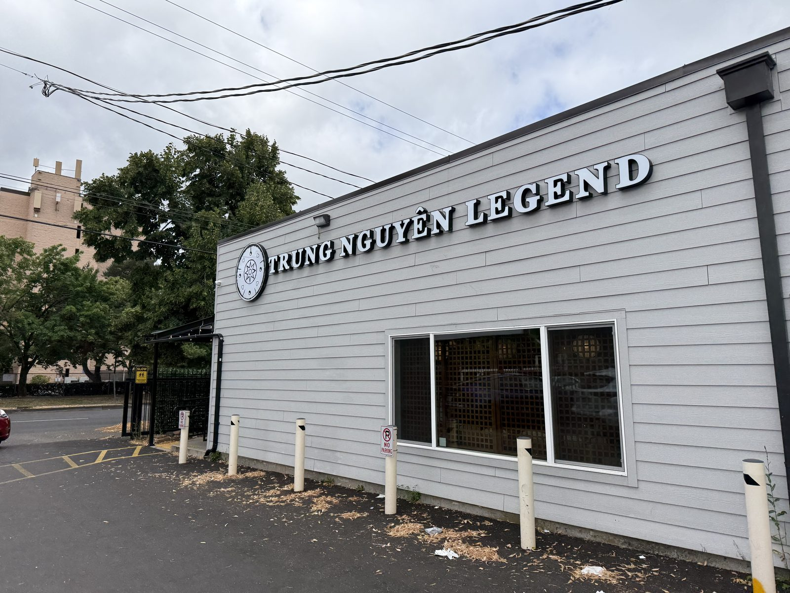
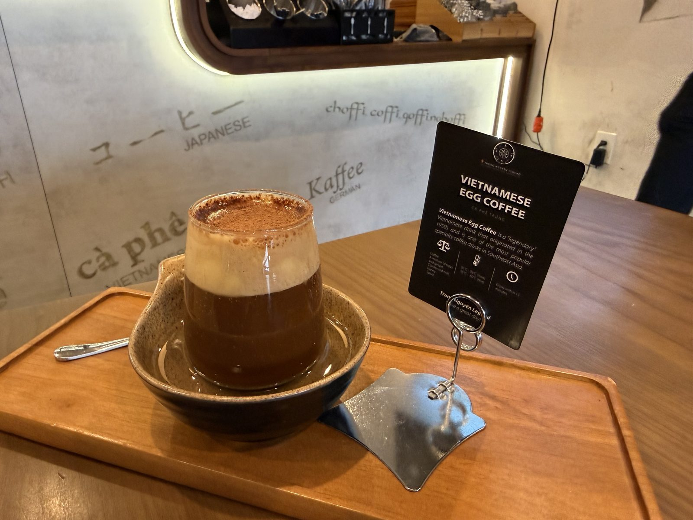

The Egg Coffee at Trung Nguyên Legend

Quarter past ten on a Sunday morning, first stop of a day that had no fixed itinerary beyond eat well, several times. Trung Nguyên Legend sits on SE Powell Boulevard in the middle of Portland's Jade District, the stretch of 82nd Avenue and the streets around it that has been the city's center of gravity for Vietnamese, Chinese and other Asian-owned businesses for decades — and this particular café only opened its doors within the last year. The inside still has that just-built shine to it: dark wood, brass fittings, a wall by the register that spells out the word coffee in a dozen languages — kávé in Hungarian, 커피 in Korean, koffie in Dutch, kaffe in Swedish, kahve in Turkish, and at the bottom of the wall, in the language that actually matters here, cà phê.
The order
Cà phê trứng — egg coffee — and nothing else needed to be said about what to get. It arrives as a small ceremony: a wooden tray, a squat ceramic bowl of hot water underneath to keep the glass warm from below, a card propped against a little tripod explaining the drink to anyone who hasn't had it before. In the glass itself, a thin dark pour of Vietnamese coffee sits under a much thicker layer of pale, whipped foam, the top of it dusted with cocoa in a ring. It looks less like a coffee than a dessert someone forgot to chill, which is close to the actual truth of it.
Five out of five, no hedging. This is the kind of drink where the first spoonful — and it is a spoon, not a straw, at least at the start — tells you everything the rest of the glass is going to confirm. The foam is not whipped cream and it is not a milk foam. It's egg yolk, sugar, and sweetened condensed milk, beaten for a long time until it turns pale and holds its shape, and it tastes like a very good tiramisu that has been introduced to a double shot of dark roast. Stir it down into the coffee as it cools and the whole thing turns into something closer to a drinkable custard. Leave the top layer alone for as long as you can stand it and eat it more or less with the spoon first. Both are correct. I did both.

Where the foam came from
The story, as it's told in Hanoi, is a wartime substitution that outlived the shortage that caused it. In 1946, with milk scarce during the First Indochina War, a bartender at Hanoi's Metropole Hotel named Nguyễn Văn Giảng started whisking egg yolks with sugar and condensed milk to make up for the milk he didn't have, and spooning the result over strong Vietnamese coffee in place of the cream a French-style café au lait would normally get. It worked well enough that he opened his own shop, Café Giảng, in Hanoi's Old Quarter — still open today, still run by his family, still serving what by now has its own name and its own place on menus a continent away from where it started. What began as a workaround for a missing ingredient turned into the better drink.
The name over the door
Trung Nguyên is the bigger story here, and it's a strange one even by the standards of coffee-company origin myths. The company was founded in 1996 in Buôn Ma Thuột, the small city in Vietnam's Central Highlands that sits at the middle of the country's coffee-growing region, by Đặng Lê Nguyên Vũ — who dropped out of medical school in his third year to do it, starting with borrowed capital and a single roasting operation. By the 2010s he had built Trung Nguyên into Vietnam's biggest domestic coffee brand and expanded it into instant coffee, capsules, and a chain of cafés carrying the "Legend" name into other countries. National Geographic profiled him and landed on a title that stuck: Vietnam's Coffee King. Whatever else is true of the man, the coffee in the cup on SE Powell is the reason the title still means something.
What I'd get next time
The menu board cycles specialty drinks I didn't try — a Sparkling Espresso built over ice with a lemon wheel and a sprig of something green, a Yuzu Coffee that looked like an iced tea until you noticed the coffee beans sitting next to it on the tray in the photo. Either is next. But I'd be lying if I said I wasn't already thinking about ordering the egg coffee again before I've finished writing this.
The practical bit
Trung Nguyên Legend — 8435 SE Powell Blvd, Portland, Oregon 97266, in the Powellhurst-Gilbert neighborhood near SE 82nd Avenue.
Hours: 8:00 AM – 7:00 PM, Monday through Saturday.
Worth knowing: the egg coffee is served warm, in a hot-water bath, and is meant to be worked through slowly — this is not a to-go-cup-in-the-car order, even though they'll make it that way if you ask. Give it a table and twenty minutes.